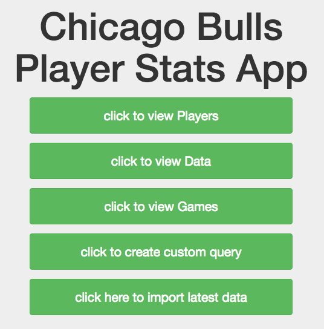
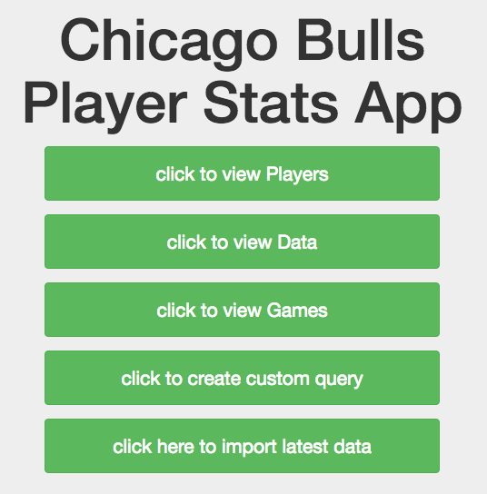

PROJECTS

Netflix Prize Contest -- Spring 2014
GitHub Link

Cosign Dating -- Fall 2015
Cosign Link

CHI Bulls Data Application -- Spring 2016
GitHub LinkPublic site link
I'm a technology specialist and web applications developer. As a technology passionate I am driven by new challenges and always excited to learn more.
University of Texas at Austin
UT Computer Science Dept
UT McCombs School of Business
Texas Medical Liability Trust
Java, Magnolia CMS, Tomcat7, Apache2, Oracle SQL.
Texas Medical Liability Trust
Assists with the acquisition and directs the installation of new network hardware, PC computer, hardware and software systems.
Investigate and resolves hardware/software and communications problems.
UT Information Technology Office
Interview and train Helpdesk employess.
Plan and direct Helpdesk projects.
Research and implement new technologies for Helpdesk and users.
Texas Medical Liablity Trust
Resolve hardware/software problems.
Create and administer user accounts and email accounts.
Developed SQL scripts to fix bugs for the web application's database.
UT Information Technology Office
Consult with students and faculty about better uses of their technology.
Run security scans on Macbooks.
Create and install images for checkout Macbooks.
- 3 Years. Developed Software. Eg. Netflix Prize. Back-end Web Development scraping for data analytics website. Developed projects from scratch to deployment.
SQL
- 2 Years. Wrote scripts to update database at Texas Medical Liability Trust. Developed SQL queries for Cosign
PHP
- 1 Year. Developed back-end code for Cosign and various projects for CS329E.
HTML/CSS/JavaScript/AJAX
- 2 Years. Developed front end view of Cosign. Designed web pages from scratch for CS329E.
Java
- .5 Year. Java Developer for web applications at Texas Medical Liability Trust and developed simple Android Applications.
Git
- SCM. Used for all development projects and SCM used for professional work at Texas Medical Liabilty Trust.
- Over 5 years. Professional IT Administration experience for OSX. Technical experience with adminstration at Information Technology Office. Experience in terminal line commands, UNIX.
Windows OS
- Over 5 years. User experience in Windows XP, 7, 8, 10, and Server 2003. Professional IT Administration experience in Windows 7, 8, and Server 2003 at Texas Medical Liability Trust.
Linux Ubuntu
- 1 year. Current OS of choice for J2EE Enviroment development.
- Work with a team of four network operations administrators to asses computer system issues in Texas Medical Liability Trust.
- Native Spanish and Fluent English speaking and writing.

Netflix Prize Contest -- Spring 2014
GitHub Link
Cosign Dating -- Fall 2015
Cosign Link

CHI Bulls Data Application -- Spring 2016
GitHub Link